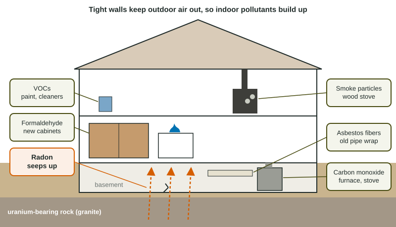

People in many countries spend about 90% of their time indoors. Homes, schools and offices have their own air pollution, and because buildings hold air in, indoor levels can be higher than anything outside. Sealing buildings tightly to save energy makes this worse unless they are also well ventilated.
The main indoor pollutants

| Pollutant | Source | Harm | Main fix |
|---|---|---|---|
| Radon | uranium decaying in rock and soil; seeps through foundation cracks | radiation in the lungs; lung cancer | test; seal cracks; fan system venting soil gas outside |
| Formaldehyde and other VOCs | pressed wood, glues, carpets, paints, cleaners | eye and throat irritation, headaches; formaldehyde can cause cancer | low-VOC products; ventilation |
| Carbon monoxide | furnaces, gas stoves, generators, wood stoves burning poorly | blocks oxygen in the blood; can kill | CO detectors; inspect and vent appliances |
| Asbestos | old insulation, floor tiles, pipe wrap | fibers scar the lungs; cancer | leave intact or have experts remove it |
| Smoke from indoor fires | cooking and heating with wood, dung, charcoal | particles and CO; lung disease | vented, efficient stoves; cleaner fuels |
Radon: the invisible one
Radon forms when uranium in rock decays. Granite and some shales hold more uranium, so homes built on them tend to have more radon. The gas seeps up through cracks in basement floors and walls. You cannot see, smell or taste it, so the only way to know is to test. The EPA recommends fixing a home at 4 picocuries per liter (pCi/L) or more. The usual fix is a fan system that draws soil gas from under the floor and vents it above the roof.
Worked example: how well did the fix work? A basement tests at 12.0 pCi/L. After a fan system, it tests at 1.8 pCi/L. What is the percent change?
Setup: . Answer: , an 85% drop, well under the 4 pCi/L action level.
New materials and old ones
Formaldehyde and other VOCs off-gas from new materials: they evaporate out of the glues and finishes. The release is fastest when the material is new and slows over months, so a new building often smells strongest in its first weeks. Asbestos is the opposite: the danger is in old buildings, and only when the material is damaged or removed so fibers get into the air.
Combustion indoors
Any flame indoors can make carbon monoxide if it burns with too little oxygen. CO detectors near bedrooms, yearly furnace checks and never running a generator in a garage prevent poisonings. Worldwide, the biggest indoor air problem is smoke from cooking and heating over open fires with wood, dung or charcoal, which exposes more than 2 billion people (WHO), mostly women and children, to high levels of particles and CO. Efficient stoves with chimneys and cleaner fuels are the fix.
Sick building syndrome
When people in one building get headaches, itchy eyes or coughs that clear up after they leave, the building itself is the likely cause. Poor ventilation lets VOCs and other pollutants build up. More outdoor air and fewer sources fix it.